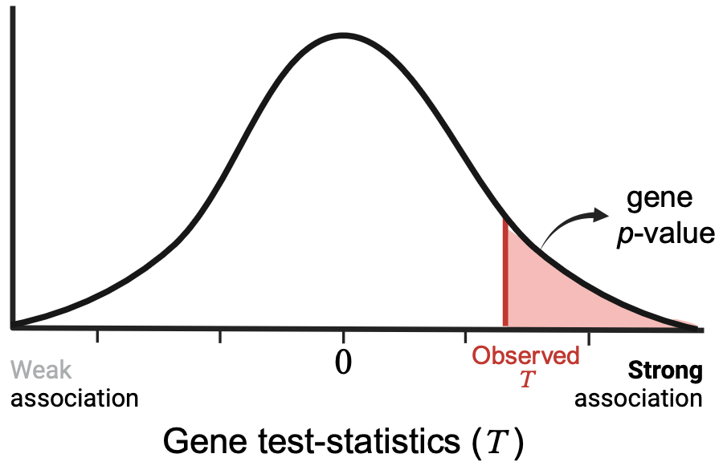
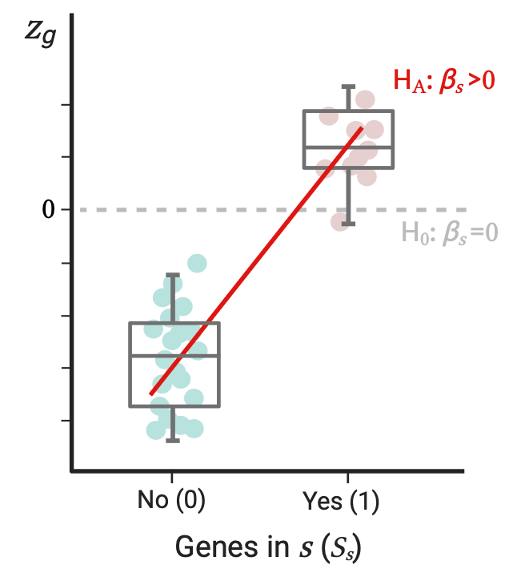

MAGMA: How does the Gene and the Gene-Set analysis operate?
Global overview of MAGMA Gene and Gene-Set analyses and detailed practical demonstration of the SNP-wise gene analysis and the competitive gene-set analysis.
Introduction
MAGMA stands for Multi-marker Analysis of GenoMic Annotation and is a computational tool for the analysis of the joint effect of multiple genetic markers on a phenotype based on Genome-Wide Association Study (GWAS) data. MAGMA constitutes a flexible and generalizable approach to assess the association of individual genes or gene-sets with a phenotype based on the associations that the SNPs of the genes have with the same phenotype.
This is a commonly used method that you’ll likely find implemented while reading about GWASes or that you’ll need to run if working with genetic variant associations and gene/gene-set analysis, so let’s see how it works.
What you’ll learn here
Global description of the analyses MAGMA allows to run at gene and gene-set levels.
A more detailed demonstration of the SNP-wise gene analysis implemented in MAGMA: inputs, commands and outputs ….
TODO
How does it work?
MAGMA allows to first perform a gene analysis and subsequently a gene-set analysis (GSA) based on gene-level results. Note, however, that the gene-set analysis comes as a separate layer and it is an additional optional step, though it is frequently performed and quite useful.
Gene analysis
Genetic markers are aggregated to the level of whole individual genes and those in a given gene are jointly tested for their association with the phenotype, defining in such way the association of the gene itself. This definitely allows to detect significant associations of multiple small-effect markers in a gene that individually would be missed, i.e., associations that depend on multiple markers. This also reduces the number of required tests and makes the results more interpretable by summarizing at the gene level.
Two alternatives for gene analysis are offered by MAGMA:
Multiple linear PC regression model
If the input data is raw genotype data, MAGMA fits a multiple linear PC regression model to the individuals’ phenotypes. Here, for one gene \(g\) at a time, the SNP matrix that contains the information of the SNPs for that gene across all the \(N\) individuals studied, is projected onto its Principal Components (PCs). These PCs capture genotypic differences between individuals for the given gene and the first \(K\) most explanatory ones (comprising 99.9% of the variance) are used as predictors of the phenotype (\(Y\)) in the linear model.

Phenotype is modeled as:
\[ Y = \alpha_{0g}+X^*_{g}\alpha_g+W\beta_g+\epsilon_g \]
\[ {\begin{bmatrix}Y_1 \\ ... \\ Y_{N-1} \\ Y_N\end{bmatrix}} = {\begin{bmatrix}\alpha_{0g} \\ ... \\ \alpha_{0g} \\ \alpha_{0g}\end{bmatrix}} + \stackrel{PC1 \ \ \ \ \ \ PC2 \ \ \ \ \ \ ... \ \ \ \ \ \ PC_K} {\begin{bmatrix} x_{11} \ \ x_{12} \ \ ... \ \ x_{1K} \\ ... \\ x_{(N-1)1} \ \ x_{(N-1)2} \ \ ... \ \ x_{(N-1)K} \\ x_{N1} \ \ x_{N2} \ \ ... \ \ x_{NK} \end{bmatrix}} {\begin{bmatrix}\alpha_{g1} \\ \alpha_{g2} \\ ... \\ \alpha_{gK}\end{bmatrix}} + \\ \]
\[ \stackrel{Cov1 \ \ \ \ \ \ Cov2 \ \ \ \ \ \ ... \ \ \ \ \ \ CovL}{\begin{bmatrix} w_{11} \ \ w_{12} \ \ ... \ \ w_{1L} \\ ... \\ w_{(N-1)1} \ \ w_{(N-1)2} \ \ ... \ \ w_{(N-1)L} \\ w_{N1} \ \ w_{N2} \ \ ... \ \ w_{NL} \end{bmatrix}}{\begin{bmatrix}\beta_{g1} \\ \beta_{g2} \\ ... \\ \beta_{gL}\end{bmatrix}} + {\begin{bmatrix}\epsilon_{g1} \\ ... \\ \epsilon_{g(N-1)} \\ \epsilon_{gN}\end{bmatrix}} \]
With \(X_{g}^*\) the matrix of the first \(K\) PCs for gene \(g\) and \(W\) a matrix of additional covariates for the individuals that can be included in the model. \(\alpha_g\)’s and \(\beta_g\)’s are the coefficients of the PCs and covariates for the gene \(g\), respectively. \(\epsilon_g\) is the vector of residuals and \(\alpha_{0g}\) the intercept. The \(\alpha_g\)’s represent the effect of the genotype for gene \(g\) on the phenotype (the genetic effect).
Then an F-test is used to assess if genotypes for gene \(g\) have an effect on the phenotype under the null hypothesis that the genetic effect of \(g\) on the phenotype is 0 across all PCs (\(H_0:\alpha_g=\overrightarrow 0\)). This leads to a p-value for the association of gene \(g\) with the phenotype \(Y\) based on its genetic markers.
✔️ The advantage of using PCs instead of variables for individual SNPs is that 1) the number of variables included in the linear model is reduced and 2) they allow to account for redundancy and collinearity between SNPs. Also this model offers flexibility to accommodate additional covariates to model the phenotype.
SNP-wise gene analysis
If no raw genotype data is available, MAGMA also accepts SNP p-values from a GWAS as input. In this case SNP p-values for a gene are first transformed into Z or \(\chi^2\)statistics and then combined into a gene test-statistic by the mean SNP statistic or top SNP statistic method. This gene test-statistic is then used to compute the gene p-value, either by an approximation of the sampling distribution (mean SNP statistic method) or by phenotype permutation (mean and top SNP statistic methods).
This SNP-wise MAGMA analysis based on SNP summary statistics requires a reference dataset with similar ancestry as the data from which SNPs p-values were computed. This is needed to account for linkage disequilibrium (LD) between SNPs. If an approximation of the sampling distribution is used to compute the gene p-value, this reference is required to obtain the SNP statistic correlation matrix \(R\). If phenotype permutation is chosen, these reference data are necessary to generate the gene test-statistics empirical sampling distribution.
Summary: SNP p-values → SNP statistics →*gene test-statistic →* gene p-value → gene z-score (\(z_g\))
*Gene test-statistics can be constructed from the SNP statistics applying one of the two implemented methods in MAGMA:
Mean SNP statistic:
Mean Z gene test-statistic: SNP p-values of a gene are transformed to Z-statistics and the mean (weighted or unweighted sum) of such Z-stats is used as the test-statistic of the gene: \(T=\sum_i^G w_iz_i\), with \(G\) the total number of SNPs in the gene and \(z_i\) and \(w_i\) the Z-statistic and weight for SNP \(i\), respectively. These gene test-stats follow a normal distribution.
Mean \(\chi^2\) gene test-statistic: the mean (weighted or unweighted sum) of the \(-2log\) of the SNP p-values (that are \(\sim\chi^2_{(2)}\)) is used as gene test-statistic: \(T=-2\sum_i^G w_i\log(p_i)\), with \(p_i\) the p-value of SNP \(i\). These gene test-stats are assumed to be \(\sim c\chi^2_{(f)}\), where \(c\) and \(f\) are constants of the distribution.
*For both mean Z and mean \(\chi^2\) gene test-statistics the p-value of the gene is obtained based on a known approximation of the sampling distribution of the gene test-stats. For such purposes, the reference dataset is needed to estimate the SNP statistic correlation matrix, from which the optional SNP weights (\(w_i\)) are computed to correct for dependency between SNPs. A phenotype permutation procedure can also be applied to compute empirical gene p-values (see further below).
Top SNP statistic(s): the lowest SNP p-value among all SNPs in the gene (corresponding to the most associated SNP) or the sum of the \(-log(p)\) for the top most associated SNPs is used as the gene test-statistic.
*To compute the gene p-value a phenotype permutation procedure is the only option available. Here random phenotypes are assigned to the reference data and a top gene test-statistic is computed in each permutation. The empirical gene p-value is computed as the proportion of these permuted gene test-statistics that are higher than the observed one.
The SNP-wise gene analysis of MAGMA can also be run with raw genotype data, in which case SNP p-values are computed internally and the raw genotype data takes place of the reference data.
After running the gene analysis, either by PC regression or SNP-wise analysis, the resulting gene p-values are subsequently transformed to Z-values (\(z_g\)) to be introduced into the gene-set analysis. These Z-values are normally distributed and capture the association strength of the genes with the phenotype: the greater (higher positive) they are the stronger the gene association.
Note that with the gene analysis F-test (with PC regression) and gene test-statistics (with SNP-wise models) we are not really looking at the sign (+/-) of the association of the genetic markers of a gene with the phenotype, just exploring if there’s an association at all:
In the PC regression model, we only assess if all genetic effects of a gene (\(\alpha_g\)’s) are zero or not, but not if the global gene effect is positive or negative.
With SNP-wise methods, since they are based on SNP p-values that don’t inform about the sign of the association, just how strong it is, the gene test-stats derived from them are also reflecting “sign-ignorant” associations. The gene p-value, however, is computed based on the right tail of the distribution of these gene test-stats (\(T\)’s) as they correspond to stronger (but not necessarily positive) associations.

Gene-set analysis
Once having gene-level associations, we can now think of gene set associations. Intiatlly, we aggregate genes in groups of genes that share cellular or functional properties, such as involvements in certain biological processes, with particular molecular functions, cellular locations, cell-type specific expression or activity, or differential expression for a given condition. These define concrete processes or features we may be interested in relating with a GWAS phenotype. By doing this, we can gain insights into the potential molecules, pathways, and tissues implicated in a phenotype’s etiology.
Since all that’s necessary from the gene analysis to run the gene-set analysis are the gene Z-values, gene-set analysis operates the same independently of the gene analysis method applied (PC regression or SNP-wise), as both result in gene p-values and respective \(z_g\)’s.
Two gene-level regression models are implemented to asses the association of gene-sets with the phenotype:
Self-contained analysis
Tests if the genes of a gene set \(s\) are jointly associated with the phenotype. This is assessed by an intercept-only linear regression \(Z_s=\beta_0\overrightarrow1+\epsilon_s\), with \(Z_s\) the variable with the \(z_g\)’s of the genes in \(s\). With this simple model we evaluate the null \(H_0:\beta_0=0\) against the alternative \(H_A: \beta_0>0\). This is equivalent to a one-sided single-sample t-test comparing the mean association of genes in \(s\) to 0. In other words, we are evaluating if the mean association of the genes in the set is greater than 0 (i.e., is a strong association, not to be confused with a positive effect of \(s\) on the phenotype).

Competitive analysis
Tests whether the genes in the set \(s\) are more strongly associated with the phenotype than the rest of genes not in the set. Here the outcome variable \(Z\) of the model now includes the \(z_g\) of all genes. We define \(S_s\) as a binary predictor of \(Z\) that equals 1 if a gene is in \(s\) and 0 if not: \(Z=\beta_{0s}\overrightarrow1+S_s\beta_s+\epsilon\).
Here \(\beta_s\) reflects the difference in the association strength of the genes in \(s\) versus those not in \(s\). The p-value of the gene set results from testing on \(\beta_s\): we test \(H_0: \beta_s=0\) vs \(H_A: \beta_s>0\), which is equivalent to a one-sided two-sample t-test evaluating if the mean association strength of genes in \(s\) is greater than the mean association strength of genes not in \(s\). But again, this doesn’t mean genes in the set \(s\) have a positive association with the phenotype. This analysis is performed by default.

✔️ Both self-contained and competitive gene-set analyses are implemented through more general gene-level regression models that can accommodate combinations of gene sets and gene properties such as gene expression levels and gene size to test for their effects and correct for potential confounding effects. This can be useful, for example, to test if variables such as differential expression between tissues or conditions have an effect on the phenotype associations.
Further, analyzing gene sets evidently reduces the number of output tests, but note that one test per gene still has to be performed in the the previous gene analysis.
Due to LD between SNPs neighboring genes are usually correlated. This obligate us to assume \(\epsilon \sim MVN(\overrightarrow0, \sigma^2R)\) in the gene-set analysis, where \(R\) is the gene-gene correlation matrix.
Example of SNP-wise gene analysis and competitive gene-set analysis
By default the SNP-wise gene analysis method implemented is the mean Z gene test-statistic, and the default gene-set analysis is the competitive one. Let’s exemplify how to run these analyses. The following are the three main steps implemented by MAGMA.
Step 1: Annotation of SNPs onto genes
The first step is to map all SNPs from your GWAS data onto the genes of the reference genome.
Input: we need SNP and gene positions based on the same human genome reference build; we provide this in the
.snplocand in the.gene.locfiles, respectively. MAGMA website provides gene location files ready to download.## .snploc file example ## Columns: # * SNP: SNP rsID # * CHR: SNP chromosome # * BP: SNP position SNP CHR BP rs62513865 8 101592213 rs79643588 8 106973048 rs17396518 8 108690829 rs983166 8 108681675 rs28842593 8 103044620 rs7014597 8 104152280 rs3134156 8 100479917 rs6980591 8 103144592 rs72670434 8 108166508## .gene.loc file example ## Required columns: # * GeneID # * Chr # * Start site # * Stop site ENSG00000243485 1 29554 31109 + MIR1302-2HG ENSG00000186092 1 65419 71585 + OR4F5 ENSG00000238009 1 89295 133723 - AL627309.1 ENSG00000239906 1 139790 140339 - AL627309.2 ENSG00000236601 5 180881343 180888537 - AL732372.1 ENSG00000235146 1 523009 530148 + AC114498.1 ENSG00000229905 1 696291 697369 + AL669831.2 ENSG00000237491 1 714150 745440 + AL669831.5ImportantSNPs in sexual chromosomes are usually excluded from the analysis as their inclusion brings additional analytical, statistical, and bioinformatic challenges for their analysis (Sun et al. 2023). MAGMA only supports X chromosome analysis.
Commands: the following are the flags and inputs used to map the SNPs onto genes.
## Run SNP annotation # --annotate: flag to run annotation # --snp-loc: indicate file with SNP positions # --gene-loc: indicate file with gene positions # --out: prefix for output files magma --annotate \ --snp-loc [.snploc file]\ --gene-loc [gene.loc file]\ --out [output_prefix]Output: this step returns the
.genes.annotfile as output, containing all SNPs that were assigned to each gene.## .genes.annot file example ## Columns: # * GeneID # * Chr:Start:Stop # * Corresponding gene SNP rsIDs window_up = 0 window_down = 0 ENSG00000237491 1:714150:745440 rs186002080 rs12184267 rs142557973 rs149887893 ENSG00000177757 1:752751:755217 rs3115859 rs3131968 rs3131967 rs3115860 ENSG00000225880 1:761586:762902 rs2286139 rs377377186 rs374493323 ENSG00000230368 1:803451:812283 rs11240779 rs28410559 rs72631880 rs58686784
Step 2: SNP-wise gene analysis
Input: we need to provide the SNP p-values in a
.pvalfile and the gene-wise SNPs in the.genes.annotfile obtained in the previous step. A reference dataset must be provided as well. Check available options of reference data files in the MAGMA website.The total sample size (N) of the GWAS from which the SNP p-values were derived must be indicated as well using the N modifier of
--pval. Alternatively, if different sample sizes were used per SNP, these can be contained in a separate column of the.pvalfile whose name is specified in the ncol modifier of--pval.## .pval file example ## Columns: # * SNP: SNP ID # * P: SNP p-value # * N: optional SNP sample size SNP P N rs62513865 0.4847 130644 rs79643588 0.5605 130644 rs17396518 0.8145 130644 rs983166 0.5704 130644 rs28842593 0.7488 130644 rs7014597 0.5034 130644 rs3134156 0.2225 130644The next is a
headof the 1000 Genomes European panel data used as the reference dataset.## g1000_eur reference data example ## Columns: # * Chr # * SNP rsID # * Genetic distance # * Position # * Allele1 # * Allele2 1 rs537182016 0 10539 A C 1 rs575272151 0 11008 G C 1 rs544419019 0 11012 G C 1 rs540538026 0 13110 A G 1 rs62635286 0 13116 G T 1 rs200579949 0 13118 G ACommands: the following are the flags and files required to run the SNP-wise mean Z-stats method.
## Run gene analysis based on SNP p-values # --bfile: indicate reference dataset # --pval: indicate file with SNP p-values # ncol: colname for SNP samples sizes in .pval file # (or alteratively) N: integer for total sample size of study # --gene-annot: indicate file with gene SNPs # --out: prefix for output files magma --bfile [reference file]\ --pval [.pval file] ncol=[colname for N]\ --gene-annot [.genes.annot file]\ --out [output_prefix]Output: the output of the gene analysis are the gene p-values and the gene \(z_g\)’s. Also returned is the gene correlation matrix \(R\) used to account for LD in the gene-set analysis (step 3).
Two files are returned as output: the
.genes.outfile that contains the gene analysis results in a human-readable format and the.genes.rawfile that is an intermediary file input for gene-set analysis that also includes the gene correlations.## .genes.out output file example # * NSNPS: number of SNPs assigned to each gene # * NPARAM: number of relevant parameters (such as PCs) used in the model for each gene # * N: sample size for analyzing the gene # * ZSTAT: gene z-value # * P: gene p-value GENE CHR START STOP NSNPS NPARAM N ZSTAT P ENSG00000237491 1 714150 745440 16 5 104688 0.59488 0.27596 ENSG00000177757 1 752751 755217 11 2 114792 0.22362 0.41153 ENSG00000225880 1 761586 762902 2 1 110271 0.18366 0.42714 ENSG00000230368 1 803451 812283 10 3 120884 -1.2421 0.8929 ENSG00000272438 1 840214 851356 32 4 116196 1.1083 0.13386 ENSG00000223764 1 852245 856396 17 3 116843 1.2828 0.099786## .genes.raw output file example VERSION = 110 COVAR = NSAMP MAC ENSG00000237491 1 714150 745440 16 5 104688 63.625 0.594875 ENSG00000177757 1 752751 755217 11 2 114792 103 0.223624 0.772254 ENSG00000225880 1 761586 762902 2 1 110271 87 0.183658 0.825082 0.943709 ENSG00000230368 1 803451 812283 10 3 120884 106.7 -1.24209 0.220645 0.404423 0.341011 ENSG00000272438 1 840214 851356 32 4 116196 212.625 1.10832 0.0435105 0.0410553 0.0368872
Step 3: Competitive gene-set analysis
Input: this analysis takes the \(z_g\) for each gene obtained in the previous step (in the
.genes.rawfile) and the gene sets of interest.## gene_sets.txt file example ## Columns: # * Gene: gene ID # * Set: set to which the gene belongs Gene Set ENSG00000164647 SetA ENSG00000105889 SetA ENSG00000085117 SetA ENSG00000071794 SetA ... ... ENSG00000135535 SetF ENSG00000183230 SetF ENSG00000124493 SetFCommands:
## Competitive GSA # --gene-results: indicate file with gene z-values # --set-annot: indicate file with gene sets # gene-col: colname for genes # set-col: colname for sets # --out: name of output folder magma --gene-results [.genes.raw file]\ --set-annot [gene_sets.txt file] gene-col=Gene set-col=Set\ --out [output folder]Output: the file
.gsa.outcontains the primary results of the competitive gene-set analysis.## .gsa.out GSA output file example # * VARIABLE: gene set name # * TYPE: type of variable (set) # * NGENES: size of overlap between our genes in the set and genes with assigned SNPs # (i.e. number of genes in the set with SNPs) # * BETA: regression coeff (Bs) for Ss # * BETSA_STD: semi-standarized regression coeff. # This is the predicted change in Z by a change of one sd in the # predictor gene set (i.e., Bs/sd(Ss)) # * SE: standard error of Bs # * P: p-value for the set TOTAL_GENES = 28129 ## Total number of genes included in the analysis TEST_DIRECTION = one-sided, positive (set), two-sided (covar) ## one-sided (+) test for GSA CONDITIONED_INTERNAL = gene size, gene density, sample size, inverse mac, log(gene size), log(gene density), log(sample size), log(inverse mac) ## Variables the analysis was conditioned on VARIABLE TYPE NGENES BETA BETA_STD SE P SetA SET 2557 0.045582 0.013104 0.020419 0.0128 SetB SET 395 0.071821 0.008451 0.051418 0.081242 SetC SET 850 -0.039813 -0.0068155 0.034848 0.87337 SetD SET 163 0.033361 0.0025322 0.079059 0.33652 SetE SET 1709 0.083787 0.020016 0.02423 0.00027251 SetF SET 232 0.099547 0.0090033 0.067531 0.0702
The .gsa.sets.genes.out file provides per-gene information for each gene set. The \(z_g\)’s used for the analysis are shown in this file and in .gsa.genes.out that has information for all genes in the analysis.
Here NGENES doesn’t always match the number of genes provided for a set. That’s because these genes must 1) exist in the .gene.loc file in order to be assigned SNPs, and 2) have SNPs present in the GWAS study and in the reference data as only the ones present in this file are used. This is because only genes with SNP p-values can be assigned a \(z_g\) and consequently be introduced into the gene-set analysis.
There must be an overlap >1 between genes in the set and genes with assigned SNPs (i.e. NGENES >1) to yield results. Otherwise MAGMA can’t perform the GSA and returns NA.
Conclusion
MAGMA is a powerful computational tool for extensible and adaptable gene and gene-set analyses. As presented here, MAGMA offers multiple input options that further increase its applicability. Of outmost utility is the gene analysis SNP-wise alternatives that only utlize SNP summary statistics, given that raw genotype data are not always available or accessible. This opens up the possibility to analyze a wider range of GWASes results in a fast and interpretable manner. Additionally, by relying on individual- and gene-level multiple linear regression models, MAGMA enables to analyze any discrete and continuous covariates describing individuals’ features and gene properties in the gene and gene-set analysis, respectively.
The power of this framework has proven itself, placed as one of the main methods to analyze GWAS data. Now that you know how it works, I bet you can imagine the number of hypotheses you can test by evaluating the association between any phenotype for which GWAS/genotype data are available and any set of genes with common characteristics of clinical or biological interest.
Relevant links and bibliography
de Leeuw, C. A., Mooij, J. M., Heskes, T., & Posthuma, D. (2015). MAGMA: generalized gene-set analysis of GWAS data. PLoS computational biology, 11(4), e1004219. https://doi.org/10.1371/journal.pcbi.1004219
de Leeuw, C. A., Mooij, J. M., Heskes, T., & Posthuma, D. (2015). MAGMA: generalized gene-set analysis of GWAS data. PLoS computational biology, 11(4, Suppl.), e1004219. Available here: https://journals.plos.org/ploscompbiol/article?id=10.1371/journal.pcbi.1004219#sec016
Available here: https://ibg.colorado.edu/cdrom2021/Day10-posthuma/magma_session/manual_v1.09a.pdf
Available here: https://cncr.nl/research/magma/
Contents of this post are based on the original MAGMA publication and Supplementary Methods, as well as on its official documentation site (links shown above).